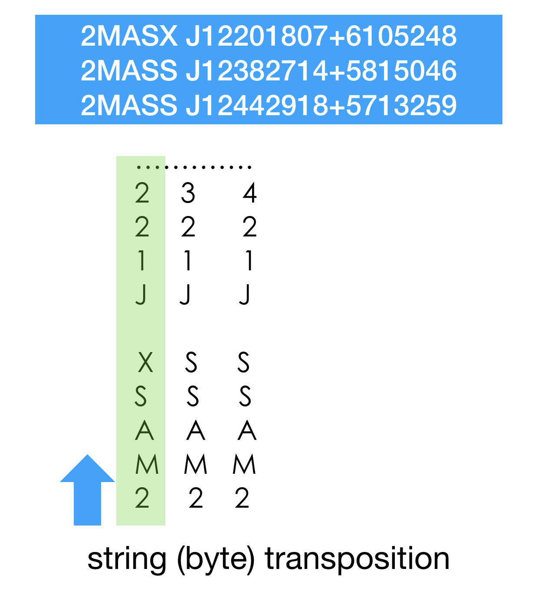
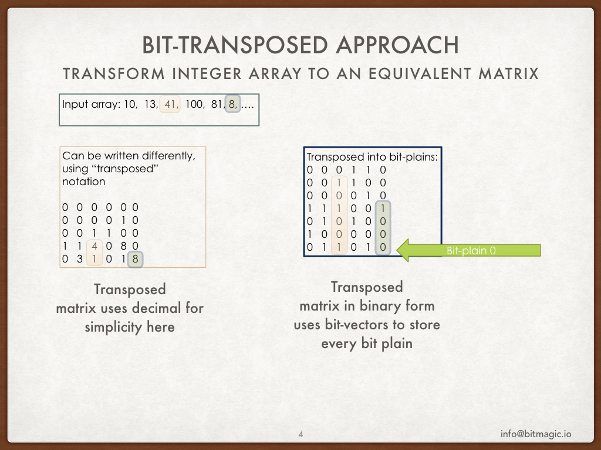
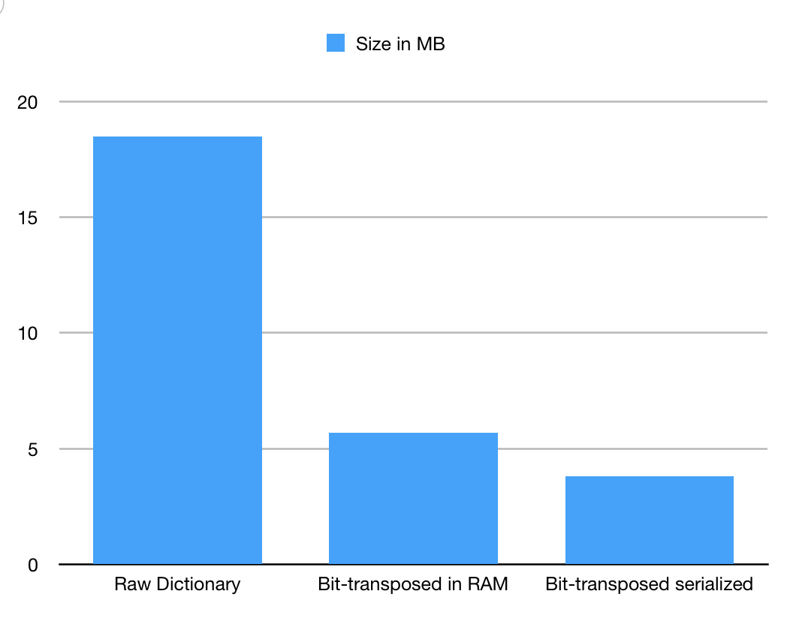
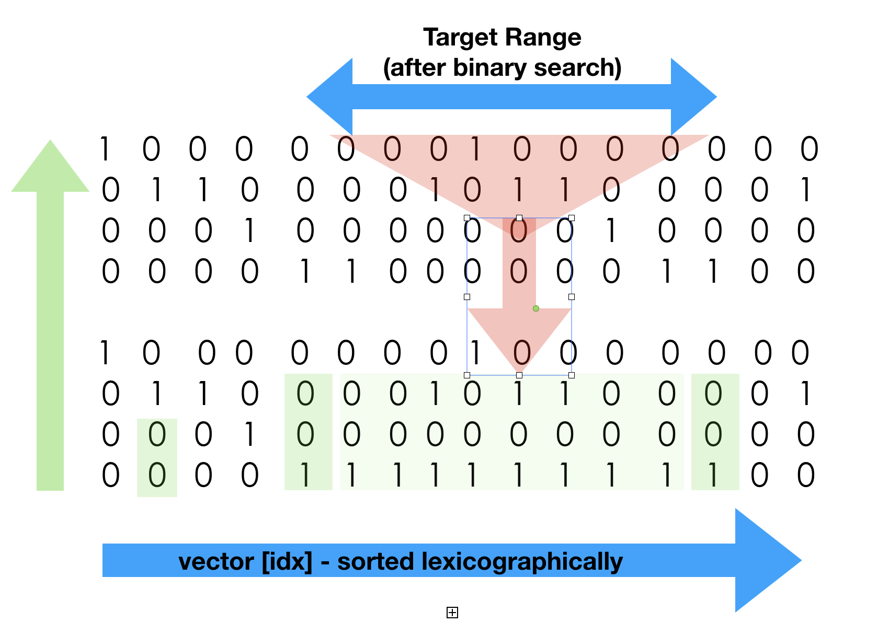
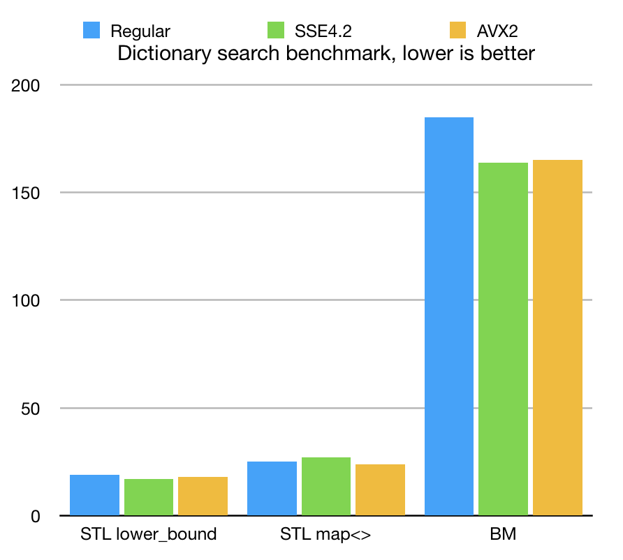
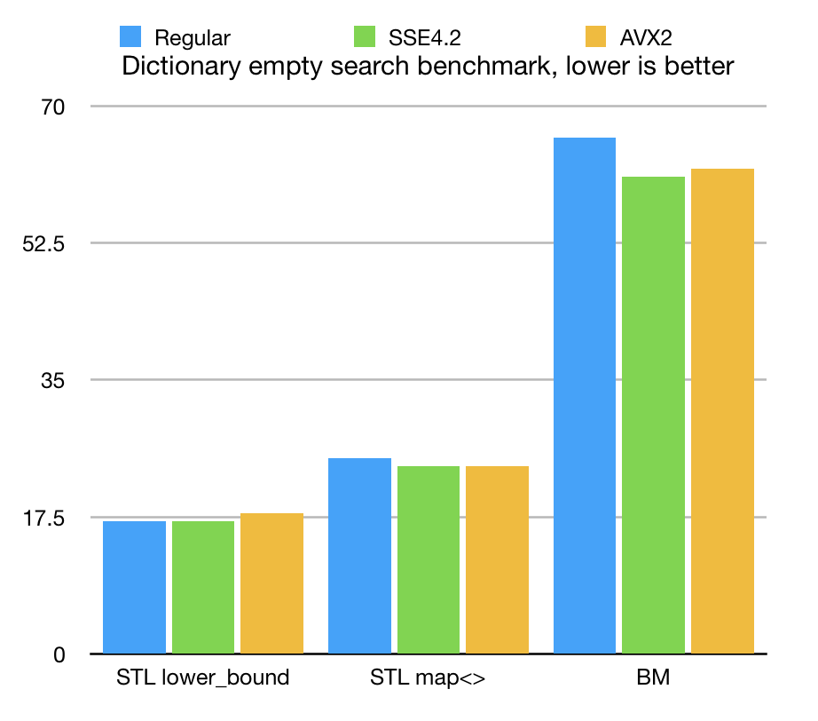
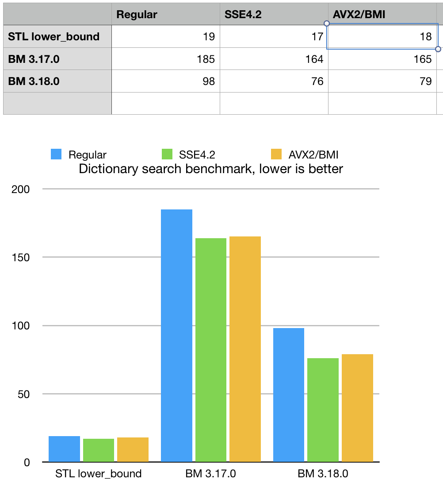
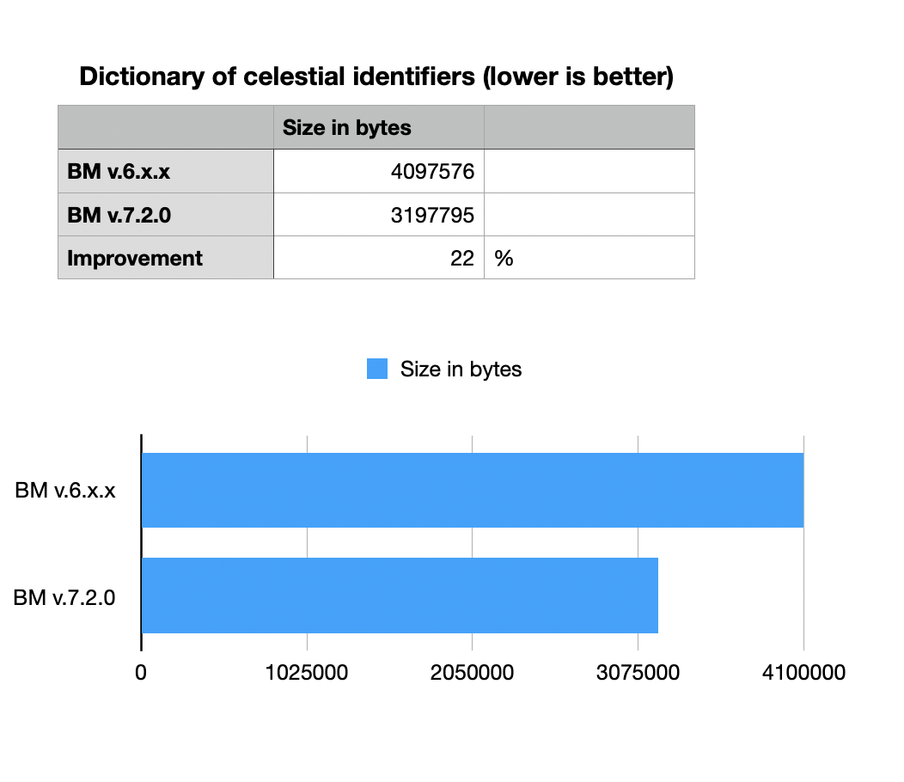

Astronavigation in bit-transposed compressed dictionaries
Anatoliy Kuznetsov. Dec 2018. anatoliy_kuznetsov@yahoo.com
Updated: Sept 2020 (BitMagic v.7.2.0)
Introduction
Operations with dictionaries and bags of words is one of the most frequent (and routine) tasks in big data, databases and natural language processing. “In the beginning was the Word”. Words of natural language are known, studied, annotated and published as dictionaries and databases. When processing scientific texts and databases though we often see “special words” which denote objects of certain regular nature, belonging to a specific scientific domain. Domain specific keywords can be names of genes, identifications of molecules or names of celestial objects. Text scanner or search system often needs to identify, the context of a term, is it from biology or astronomy or physics, knowing the context tells a lot about the text, search context, allows better ranking, improves precision.
If intelligent system tries to answer questions “Siri, give me 10 objects close to 2MASX J12201807+6105248” or “10 objects similar to O157:H7” the key here is to understand that “2MASX J12201807+6105248” is a specific start star in the sky and “O157:H7” is an e-coli strain and proximity/similarity of such objects in different domains are calculated on completely different basis. In other words correct lexical analysis often depends on controlled known dictionaries, which can be huge, change dynamically, curated by machines or humans, derived from databases, etc.
Information retrieval systems, graph databases and NLP engines deal with huge dictionaries of special terms often derive from other databases and classifiers. One common approach is to store and index terms as database indexes on disk. This approach has its limitations, because “disk is the new tape” (slow, networked, virtualized media), complex search and analytics often wants to be fast and benefit from in-memory processing. In memory processing of dictionaries needs compact data structures, something we want to explore here.
Search for celestial names
As our experiment lets take a slice of data from NASA/Caltech/JPL database of celestial objects - NED/IPAC Extragalactic database: https://ned.ipac.caltech.edu
This information is available via NED ADQL interface, which is a variant of SQL for WEB. Celestial objects in this database are identified as “prefname” strings: "2MASX J12201807+6105248” and the likes.
We try to load those strings into BitMagic string sparse vector, compact the dictionary to study memory footprint and search times.
Our test is relatively small of just approximately 800K objects, this is limitation of ADQL query, which does not allow to do a full dump in one call. This is enough to touch the water with a small experiment.
Can we determine what is a star and what is not?
Bit-transposition
Before shooting for the stars with bit transposition let’s take a look at the big picture. Dictionary of terms can be byte transposed. The whole array of terms in this case becomes a matrix of text, where each term sits in its own column. Array element 5 - column 5. To read the term we need to visit each row, top to bottom (our figure uses bottom-top notation actually) to extract term value.
This matrix structure provides random access to elements, just like a regular vector (with a penalty). Please take a momemnt to convince yourself that collection of fixed length strings can be seen as a metrix of bytes and thus transposed without any loss of information.
Now let’s talk about access costs. This matrix approach sounds inefficient for random access because… well it seems difficult on many levels, lots of memory access problems, not cache friendly and to extent computationally expensive? This is all true.
The reason why we want to try it - memory compression. It should be intuitive from the picture, that sorted dictionary would offer lots of compression opportunities, because similar letters will sit together and can be subjected to simple, yet efficient RLE (prefix sum) compression.
Our goal is to use compression techniques, which would allow (almost) random access to elements and search in the dictionary. If we can fit many dictionaries in RAM it would be an altogether different game, comparing to on disk indexes.
Our favorite approach to try is to use bit-transposition. After we are comfortable with byte-transposed structure, lets take a step forward and transpose individual bits.

BitMagic has a very powerful engine to maintain and manipulate bit-vectors which includes elements of succinct data structures and prefix sum compression (gap coding). Bit-matrix will have the same key property: it allows random access to elements without full decompression, so we can build search and retrieval algorithms on top of it.
Again pause here and convince yourself that if a dictionary can be transposed as byte matrix then it can also be a subject of a similar operation on a more granular level - and still be complete (no loss of info) as a bit-matrix. All information is still there, accessible and searchable.
Memory performance of bit-transposed dictionary of NED objects

As a benchmark baseline we took STL containers std::vector and
std::map<> (RB tree). Both containers do not provide memory footprint diagnostics,
so we computed lengths of all words as a raw dictionary size.
This should be good enough estimate for the STL vector of 800K words, 18MB.
In fact we ignored that each string will also keep length of a string, plus a pointer,
which adds 16 bytes per string on top of our estimate, plus heap fragmentation costs
(something very difficult to measure so lets forget about it for now).
For experimental set of 800K words this would be an extra 12MB, almost double the raw dictionary size. This memory footprint overhead comes from a 64-bit systems. On a 64-bit system the size of the term can actually be smaller than the size of a pointers used for keeping it. For example GenBank accession string often size of 10 characters, 2 pointers in a 64-bit system has size of 16 bytes, add a string size (another long in of 8 bytes) and our service overhead becomes 3-4 times than the content we try to keep in memory and that is something you do not want to ignore in a high performance system with in-core memory compute focus. STL map<> is even harder to estimate, since it builds a tree of nodes, which will add who knows how many extra pointers to maintain navigation and search. Thus memory performance of STL map<> can be quite unpredictable. For experimental set of 800K words this would be an extra 12MB, almost doubles as the raw dictionary size. This memory footprint overhead comes from a 64-bit systems. On 64-bit system the size of the term can actually be smaller than the size of a pointers used for keeping it.
BitMagic containers in turn provide on the fly compression, memory footprint diagnostics and use block allocations of aligned, fixed size(s) blocks to minimize the heap fragmentation. Extra costs to maintain the bit-matrix exist but are minimal and accounted for.
BitMagic footprint in memory would be 5.7MB (all extra costs well accounted). BitMagic containers implement serialization, when matrix is saved on disk it takes 3.8MB due to extra compression BitMagic footprint in memory would be 5.7MB (differential delta coding plus elias-gamma codes).
Compression factors for dictionary sparse vector
- Dictionary uses ASCII alphabet, which is only 7 bits, so we guaranteed to have at least one bit-plain free for each 8-bit character.
- Sorting exposes lots of similarities in rows, which are better represented using prefix sum (gap encoding).
- Many rows use a limited alphabet of numbers as characters, which effectively frees even more rows.
- Bit-rows show lots on similarities between bit-vectors. Experiments with Jaccard and Hamming distances showed that it should be possible to compress this data set using XOR encoding between similar vectors before saving to disk. This is on the TODO list.
While we are shooting for in-memory compute, serialization compression is important, since it allows to minimize the load time, when dictionary goes from cold on disk to hot in the main memory.
Now we have our memory footprint weighted and measured. What about search performance? The concern is that it is going to be prohibitively expensive, like 1000 times slower.
Bit-matrix search algorithm

Bit-matrix search used in this example algorithm deserves an explanation. Clearly, the search in sorted sequence of whatever nature should use binary search. Out bit-matrix while sorted can only offer an expensive element access, so comparison costs will be high. In the light of the comparison factor we use a hybrid search which starts as a binary and continues as logical search.
Hybrid search
- Narrows down with binary search O(log N) (this is a simplification of what is going on, due to presence of prefix sum compressed blocks where search is another O(log N). Binary search picks prefixes from the matrix to do a comparison, to avoid full column extraction, so it uses prefix search in compressed space. Deeper the search goes, large prefix it needs to analyze. Once binary search reaches the cut-off point it stops. The cutoff point is when our range is approximately half the underlying (super-block size. BitMagic block size is 64K bits, so search narrows down to 32K elements or so).
- Second phase is to use a combination of AND plus AND-NOT logical operations to run suffix search (top to bottom). Please note, that phase 1 of our search gave us both the range and the area at the bottom, which does not need to be searched at all, because it is all equal and corresponds to some prefix in our search term. (there is an illustration error in the picture in how i depicted the all the same (green quad) data, too late(too lazy) to fix it now). Red triangle shows the logical search with AND, AND NOT which naturally results in search space reduction tracked by the logical aggregator engine.
- Phase 3 narrows down to one candidate (if search is successful) and this is where we need to do plain match verification of 1s and 0s to confirm the match with 100% certainty (we implement exact search). Interestingly enough this matches findings at “b-Bit Minwise hashing” https://arxiv.org/abs/0910.3349 and technically can be skipped if we want to implement inexact search of some sorts, allowing a small degree of error (not our goal here) or if we know we are surely lookin for a known, existing term. We don't want to cut corners here so full check is necessary.
Search benchmarks (search for existing term)

Experiment numbers are conducted using iMac Pro Intel(R) Xeon(R) W-2140B CPU @ 3.20GHz Apple LLVM version 10.0.0 (clang-1000.11.45.5)
Search experiment was using STL lower_bound<>, map<>::find and BitMagic sparse vector search algorithms for unique items. We searched for approximately 15K randomly picked terms out of our intergalactic dictionary.
BitMagic implemented two types of search. One is “linear”, not using sorted properties of our data, but using search logical operations AND and AND-NOT between bit-vector blocks and search space reduction techniques. Another - based on hybrid search, which uses binary search space reduction first and then switches to logical ops on the final stage. Hybrid approach wins due advantages of O(log(N) so it was included into figures as the best contender.
Search benchmark (search for not found term)

Another experiment was to search for non-existing terms (generated by random modifications of existing celestial objects). Measuring negative, not found searches is very important, because we often need to try multiple dictionaries, to find one, which represents the target. Some search algorithms may be slow on not-found situations. Some scenarious when we have to try multiple candidate dictionaries are sensitive to a "not found" search scenario.
The results show that STL algorithms give us comparable speed and define a very good benchmarking target. BitMagic with its complicated sparse compression scheme is slower, but not terribly behind. If we account all the associated costs, we basically traded memory for speed. Memory is expensive and the raw CPU power is abundant.
In fact the performance gap we see in this benchmarks is actually very narrow and can be covered. Even with this gap we are able to run 15 thousand searches in less than 200ms (this is a small dictionary).
The goal of this sample study is to provide a vanilla case of bit-transposed search and understand its footprint and performance trade offs. A particular system needs to be tweaked to include extra runtime lookup structures on top of bit-matrix to make it real fast.
SIMD optimization notes
As one can see from the numbers, the advantage of SIMD parallelism is not clearly pronounced at this very round. Performance is dominated by non-linear, condition heavy logic. Nonetheless SSE4.2 and AVX2/BMI have some advantages. It is mostly HW acceleration of POPCNT, LZCNT/TZCNT and memory parallel processing of logical operations.
Memory parallel processign deserves a special mention.
Memory level paralelism (streamed read from multiple sources) exists, and has effect of performance.
BLOG posts from Daniel Lemire worth reading.
Measuring the memory-level parallelism of a system using a small C++ program?
Memory-level parallelism: Intel Skylake versus Apple A12/A12X
BitMagic uses its own bag of tricks to exploit the same effect.
Brief extract from AVX2 codebase, which performs logical AND of 4 memory sub-blocks against a destination with a check if result is all zero. Memory paralelism at work there is a measurable effect both from parallel reads and from fused write. Not a lot, but bit-matrix operations can use this motif very, very often, because search in a transposed matrix of strings has to do hundreds of logical ANDs and AND NOTs for every search hit. Even a small advantage adds up.
inline
bool avx2_and_digest_5way(__m256i* BMRESTRICT dst,
const __m256i* BMRESTRICT src1,
const __m256i* BMRESTRICT src2,
const __m256i* BMRESTRICT src3,
const __m256i* BMRESTRICT src4)
{
__m256i m1A, m1B, m1C, m1D;
__m256i m1E, m1F, m1G, m1H;
m1A = _mm256_and_si256(_mm256_load_si256(src1 + 0), _mm256_load_si256(src2 + 0));
m1B = _mm256_and_si256(_mm256_load_si256(src1 + 1), _mm256_load_si256(src2 + 1));
m1C = _mm256_and_si256(_mm256_load_si256(src1 + 2), _mm256_load_si256(src2 + 2));
m1D = _mm256_and_si256(_mm256_load_si256(src1 + 3), _mm256_load_si256(src2 + 3));
m1E = _mm256_and_si256(_mm256_load_si256(src3 + 0), _mm256_load_si256(src4 + 0));
m1F = _mm256_and_si256(_mm256_load_si256(src3 + 1), _mm256_load_si256(src4 + 1));
m1G = _mm256_and_si256(_mm256_load_si256(src3 + 2), _mm256_load_si256(src4 + 2));
m1H = _mm256_and_si256(_mm256_load_si256(src3 + 3), _mm256_load_si256(src4 + 3));
m1A = _mm256_and_si256(m1A, m1E);
m1B = _mm256_and_si256(m1B, m1F);
m1C = _mm256_and_si256(m1C, m1G);
m1D = _mm256_and_si256(m1D, m1H);
m1A = _mm256_and_si256(m1A, _mm256_load_si256(dst + 0));
m1B = _mm256_and_si256(m1B, _mm256_load_si256(dst + 1));
m1C = _mm256_and_si256(m1C, _mm256_load_si256(dst + 2));
m1D = _mm256_and_si256(m1D, _mm256_load_si256(dst + 3));
_mm256_store_si256(dst + 0, m1A);
_mm256_store_si256(dst + 1, m1B);
_mm256_store_si256(dst + 2, m1C);
_mm256_store_si256(dst + 3, m1D);
m1A = _mm256_or_si256(m1A, m1B);
m1C = _mm256_or_si256(m1C, m1D);
m1A = _mm256_or_si256(m1A, m1C);
return _mm256_testz_si256(m1A, m1A);
}
Possible performance improvements
- Improve the binary search stage, by keeping the landmark elements outside of the bit-matrix. Current algorithm as benchmarked is doing the binary search using comparisons on transposed matrix, which is expensive. The window when it switches to logical operations is rather large, approximately half block bit-block size (35K vector elements). There is no reason, why benchmark elements of binary cannot be extracted and shared between searches. Memory impact will be minimal since we would keep uncompressed only a few vector members with a ration of 1 uncompressed element to 35 thousands or so (should be very affordable).
- Micro-optimizations with SSE/AVX. Current impact of AVX2 is minimal, because lots of operations on compressed blocks are can be better vectorized.
- Thread parallel search. The underlying matrix data-structures are fit for thread parallel map-reduce processing. System with extra CPU free cores can benefit from parallelization. The situation with real world production systems is that they are often I/O bound, spare cores exists and often available.
- Further improve memory footprint with character remapping. As you probably already noticed, the celestial dictionary uses only part of the ASCII table, each character row represents a small char set, which can be frequency sorted and re-mapped into lower part of ASCII (char ‘M’ becomes 1), which would significantly reduce number of active bit-plains, which we need to analyze now. This would improve both performance and memory footprint. This is beyond the scope of the current implementation, but has a lot of potential and it is not difficult to implement re-mapping on top of a bit-transposed sparse vector.
GP-GPU compute
There are a few precursors why GPU (or FPGA) should be a good platforms for this type of algorithms. Memory compression solves memory pressure issue, specific for accelerator boards (GPU or FPGA), reduces PCI traffic penalty. It may be actually feasible to load many dictionaries into GPU and reuse it there for fast parallel search. Memory compression techniques are very handy at that.
Lots of spare parallel processing power allows faster search on parallel structures. Matrix compute is bread-and-butter of all GPU compute. The problem is structured and formulated as a matrix problem.
Lots of data blocks in this problem are coded with prefix sums, which are explored on GPU (see "GPU Gems" https://developer.nvidia.com/gpugems/GPUGems3/gpugems3_ch39.html and publications on Blelloch algorithm.
There are all reasons to believe, that GPU acceleration is very promising here.
Conclusions
Bit-transposition can have a great effect on memory footprint, which opens oppotunities for in-memory search systems, graph database, scientific visualization, GP-GPU. Performance level is usable for the bare bone logic, good trade of memory footprint for CPU resources. Lots of room for performance and algorithmic improvements remain on the TODO list.
Round 2 (Update from Dec 24, 2018)

Round 2 optimizations are happening for BitMagic 3.18.0 there are a few major improvements to the described search algorithm.
Re-mapping of character set. Remapping is a tool from the arsenal of both cryptography and succinct data structures. After we transposed our dictionary we almost immediately notice, that each character row has a unique set of characters used for it. Many dictionaries has a clear position dependent structure. This characteristic of data set can be exploited to reduce the matrix complexity.
As an example if our dictionary items has a form of prefix + number like A123, A 124, B001, etc (and this is a very common case, look at the flight numbers for example) we can build usage tables for every row in our transposed matrix and find that row 0 only uses ‘A’ , ‘B’, ‘C’ and ‘D’ and rows 1-4 are characters ‘0’ to ‘9’.
Consult the ASCII table - you will find that character ‘1’ has digital code of 49 (binary 110001). If all the lower codes are unused, why don’t we remap our ‘0’-‘9’ from 48-57 into 1-9 and reduce effective bit depth. Such remapping would easily reduce number of bit-plains in our bit-transposed matrix and it is something we want in succinct data structures for the sake of faster search.
Remapping we use in this case preserves the sort order. Another interesting idea to try is use frequency based analysis and remap characters based on that. That would not preserve natural sorted order and would require some extra effort, so left it for future improvements.
Another aspect of remapping worth mentioning is that str_sparse_vector<>
makes this remapping transparent, allowing to access all the original elements just the way
they are, without external effort on the user end. It also serializes all the remapping tables
so indexing can be restored from disk.
Another optimization we have in our sleeves is use of decoded sentinel elements, which work well to narrow down our binary stage of our search algorithm. Bit-transposed format has a high element access cost, so if we plan to do multiple searches we probably want to keep certain elements pre-decoded and use them for comparison. This approach is basically memoization only it expects that binary search would use specific sentinel elements instead of just dividing the search set by 2.
These two major optimizations and countless minor tweaks allowed us to reduce search time and become in the same league as STL algorithms, while spending significantly less memory. What we see on the chart is that BitMagic is still slower that std::lower_bound<> but it is the gap is closing. In fact we made another tests with much larger dictionaries (millions) and found that std::map<> often gets slower and loosing to BitMagic both in terms of both speed and memory consumption. This claim needs an extra study to illustrate.
Another important advantage of remapping is faster search for not-found cases.
Remapping makes it easier to detect not-founders early (and faster). Speed here depends on
data factors, but NED dictionary benchmark now actually outperforms std::lower_bound<>.
This largely because of the way not-founders are generated (highly dissimilar from the dictionary set).
Another interesting side-effect here is improved relative advantage of SIMD vectorization.
GitHub
Source code, build instructions and readme are available at: xsample5
Update from Sept 2020
 BitMagic v.7.2.0 improves on compression of sparse vectors. It now uses advantages of Binary Interpolative Coding and improves storage of internal serialization structure.